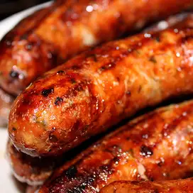

Wisconsin Bratwurst

These Wisconsin brats are incredibly tasty! This is the only way to cook bratwurst in Wisconsin. If you can get
fresh bratwurst from a sausage shop, do it — it is worth the extra cost. Serve with brown mustard on substantial
hoagie rolls, never on hot dog buns. Mustard is important and must always be stone ground. Add warm sauerkraut
and ketchup, if you like. Chow down!
Ingredients
- 2 pounds fresh bratwurst sausages
- 6 (12 fluid ounce) cans or bottles beer
- 2 onions, thinly sliced
- 1 cup butter
- 1 ½ teaspoons ground black pepper
- 10 hoagie rolls
Steps
- Prick bratwurst with a fork to prevent them from exploding as they cook; place in a large stockpot. Add
beer, onions, butter, and black pepper. Place the stockpot over medium heat, bring to a boil and simmer for
15 to 20 minutes.
- Preheat an outdoor grill for medium-high heat and lightly oil the grate.
- Cook bratwurst on the preheated grill until evenly browned, about 10 to 14 minutes, turning occasionally.
Serve hot off the grill with onions on hoagie rolls.
Home